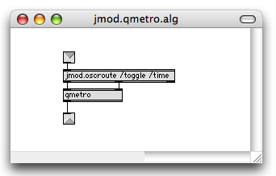
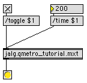
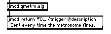

The first module that we'll set out to make, is very simple, and not too exciting. We're basically going to turn a qmetro object into a Jamoma module. Max-wise this is a very simple patch:

If we analyze what this patch is made up of, we could say that it contains each of the following elements.
The logic of this patch is really simple. It is all taken care of by one external: qmetro. In larger patches it might be made up of a combination of several externals.
In a large patch, when we run out of screen space, the only parts of the patch that we really need to be able to see are the toggle and the number box. These display the parameters and enable us to interact with them. The rest could be hidden away.
The patch has two objects values that we might want to be able to control as parameters:
We might want to know the state of these from a remote location in the patch. We might also want to be able to control these two parameters from a remote location in the patch.
The output is a "bang" message sent on regular intervals from qmetro. In the patch above, a button object is used to display it. However, the button doesn't really have to be there - thus it doesn't have to be a part of the module itself.
As we start transforming the patch above into a Jamoma module, we will be dealing with the GUI, the parameters, the logic, and the output one at a time. We will start off with the logic part.
In Jamoma, the logical part of a module is usually saved as a separate patch or abstraction, and we call it the algorithm. We will start of by building the algorithm.
The algorithm for this module is not very different from the patch we started with. The only change needed is that we need to be able to send messages to the algorithm to change timing as well as turn it on or off. In Jamoma, you won't be passing numbers, bangs or similar on their own. All control messages in Jamoma are sent to the leftmost inlet of a module in the form of an Open Sound Control (OSC) message, starting with a symbol describing what parameter a value(s) are meant for. For this reason we will need to do a little bit of routing inside of of our algorithm patch. Instead of the standard Max route object, we will use jcom.oscroute, as it adds a number of useful OpenSoundControl-related functionalities. Here is what our algorithm patch should look like:

Once you have made this patch, save it as jalg.qmetro_tutorial.mxt somewhere in the search path. If you're a Jamoma developer and planning to make the new module a part of the Jamoma package, your new algorithm should be stored in the Jamoma/library/algorithm folder. If not, you should find some other dedicated place in the Max search path for your custom modules.
If you want to test this patch before moving on, you can do the following:

Now we will start making the module. The module will embedd the algorithm, and offer a GUI for parameter handling. To make it easier to create new modules, Jamoma offers a number of templates. These can be found in the Jamoma/documentation/templates folder. It is a good idea to copy the templates to the patches/templates folder in the MaxMSP folder. That way you can create new modules from the File > New menu in Max. Our module will be based on the module named jmod.template.control.mod. Make a copy of this, and rename it as jmod.qmetro_tutorial.mxt.
If you're a Jamoma developer and planning to make the new module a part of the Jamoma package, your new module should be stored in one of the subfolders of Jamoma/library/modules, depending on what kind of module it is. If not, you should find some other dedicated place in the Max search path for your custom modules.
Once you have made yourself a copy and renamed it, open it and take a look:

If your template does not look exactly like this, try clicking on the two message boxes at the lower left of the window (; max refresh and ; jmod.init bang). Sometimes the screen does not display all elements properly when you first load a patch.
The first thing we will do is embed the algorithm we have created. This is done simply by substituting the "p your_algorithm" object for jalg.qmetro_tutorial.mxt.
Next we will create the interface. If you look in the upper left corner of the patch, there's a small bluish part. When the module is complete, we will be using it as a patcher or bpatcher. At that point all we will need to see is this one small region, sized 255 x 60 pixels, or "1U-half" in the Jamoma terminology: One unit tall (60 pixels) and half a unit wide (255 pixels). For more details on various sizes of modules, please refere to the JIG.
For our interface we'll need a toggle and a number box here. We'll also rename the comments so that they make sense to us:

If you want to visually match the number box display to those used for most Jamoma control modules, you can open the inspector for the number box and make the following adjustments:
If not, you can leave it as is. You could also save the comment and numberbox settings as e.g. "Jamoma_white" prototypes from the Objects menu in Max so that it is easier to make new number boxes and comments later on with a consistent look.
Parameter handling will mainly be taken care of by a custom Jamoma component named jcom.parameter.
First we need to get the toggle and number box to communicate with jcom.parameter. We could do so using patch chords (and you are certainly welcome to do so), but that can quickly turn the patch into a pile of spaghetti. For this tutorial, we'll use pvar. If you don't know the pvar object, you should take a look at both the help file and the pdf documentation that comes with Max.
We'll start off by naming the toggle "MetroToggle" and the number box "MetroTime" by selecting one object at a time and choose Name from the Object menu:

Next we create two pvar objects with the arguments "MetroToggle" and "MetroTime" respectively. You can check that the communication between the GUI objects and pvar function by connecting toggles and number boxes to the inlets and outlets of the respective pvars and test:

Now it's time for connecting the pvar objects to jcom.parameter. This is how we'll do it:

Now we're ready for some magic. Try turning the toggle on and off, and change the time in the interface. If everything is working as it's supposed to, any change you make will cause the message box further down in the patch (connected to the 2nd outlet of jcom.pass) to reflect the parameter change.
We now need to take a look at the arguments and attributes for jcom.parameter.
Arguments
jcom.parameter takes one obligatory argument:
Jamoma uses the OpenSoundControl protocol (or OSC for short) for communication. For this reason when communicating with your Jamoma module you should place a / in front of a parameters name when sending control messages. You should also avoid using the following symbols as part of your parameter names as they are reserved for special purposes:
Slash (/) has a special meaning in OSC-land, and will have to be used accordingly. We'll look into this little by little.
For our module we will name the two parameters /toggle and /time.
Attributes
For each parameter we can set a number of attribtues. Currently the following attributes are implemented:
The template tries to help you remember the various attributes. For our module the following attributes seem sensible:
jcom.parameter toggle:
@type msg_toggle - it's a toggle
@ramp 0 - and it doesn't make sense to let a toggle ramp
@repetitions 0 - neither are repetitions useful
@range 0 1 - this is all the range that we need
@clipmode both - so anything outside the range is clipped
@description "Toggle qmetro on/off"
jcom.parameter time:
@type msg_int
@ramp 1 - can be useful for accelerando and ritardando
@repetitions 0 - repetitions won't make any differences
to the output, so we might just as well filter them out
@range 1 5000 - most of the time the metro will be fired
within this time interval
@clipmode low - but we don't want to prevent it from being
a higher value
@description "Metro interval (ms)"
Now this part of the patch looks like this:

Before we move on, it's worth noting that jcom.parameter is quite powerful. In addition to keeping track of the current state of the parameter, it can be used for ramping to new values, clipping the range and filtering out repetitions.
We want our module to return a message everytime the qmetro fires. In order to be OpenSoundControl compatible we do not want to return a "bang". Instead we will return the message "/trigger bang". In order to do so we will use the component jcom.return. jcom.return takes more or less the same arguments and attributes as jcom.parameter, and we will use the following settings:

Why do we do it this way instead of simply prepending /trigger? The answer is that jcom.return helps us in the documentation of the module, as well as with various ways of communication and mapping between modules that will be documented in other tutorials.
There's a few more tasks to carry out before we're done.
First we want to change the displayed name of the module from jcom.control to jmod.qmetro_tutorial. This we do by changing the 2nd argument of jcom.hub to "jmod.qmetro_tutorial". In addition we'll change the description attribute for jcom.hub.
If you want you can connect the left outlet of jcom.hub and the left outlet of the algorithm to a button to check that the patch is working. This is what it ought to look like:

Next we want to provide a default preset for the module. First click the "; jcom.init bang" message box so that the module is properly initialized. Then set time to 40 and the toggle to off, then click on the message "/preset/store 1 default, /preset/write". Save the preset as "jcom.qmetro_tutorial.xml" somewhere in the Max search path. Presets for standard Jamoma modules can be found in the Jamoma library/presets folder.
If you want to, you can also auto-generate HTML documentation for the patch. Simply click the /documentation/generate message box above jcom.hub. Save as "jmod.qmetro_tutorial.html" somewhere in Max's searchpath. The documentation should look something like this.
Save and close your module patch, and create a new patch. Create a bpatcher object, and in the inspector, type "jmod.qmetro_tutorial.mxt". Add a few more objects as shown below:

Click "; jcom.init bang" to initialize, and if the display is not looking as it is supposed to, refresh the screen by clicking "; max refresh".
If you interact with the toggle and time number box in the module, you'll see that updated values are reported from the outlet of the module. You can also update the parameters by sending messages from outside of the module. If you turn on audio in the patch, you'll be able to listen to the result as time ramps from one value to another.
The official jmod.qmetro.mxt module in the Jamoma distribution contains some additional features. Most notably there is a feature which varies the pulse interval by a random amount each time. Adding those enhancements to this module is left as an exercise for the reader.
A Jamoma module can be thought of as being made up of three parts:
A number of Jamoma components collaborate to make it all work together:
Creating a new module involves the following steps: